OPEN SOURCE. ON YOUR MACHINE.
Beautiful hardware dashboards.
Yours to build.
A Python SDK and CLI for hardware screens on Linux.
Put live readings on the LCDs in your PC. Pick a design, match your build, or write your own.
uv tool install pixdial
Python 3.12+ uv or pipx Free, GPL-3.0-or-later
For Lian Li UNI FAN SL V3 Wireless LCD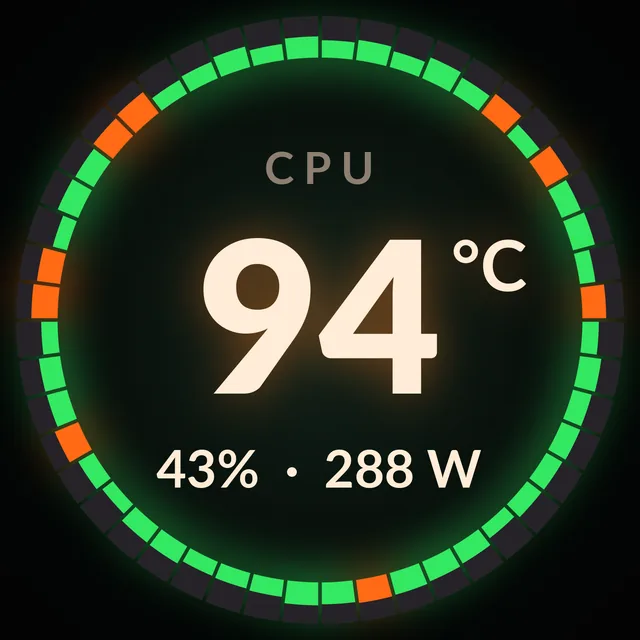
THE DESIGNS
A small screen.
A lot of possibilities.
Fourteen designs for load, temperatures, power, time and more. Choose one per panel, or let them rotate.
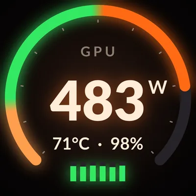
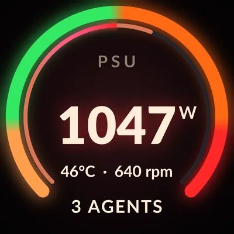
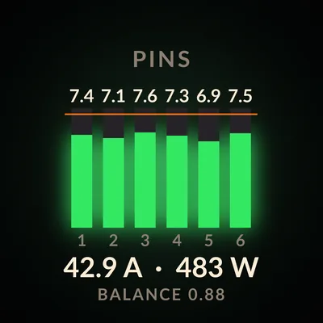
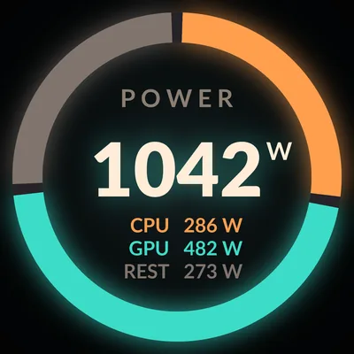
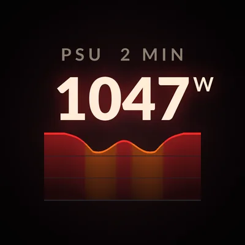
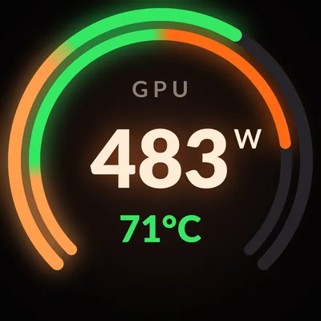
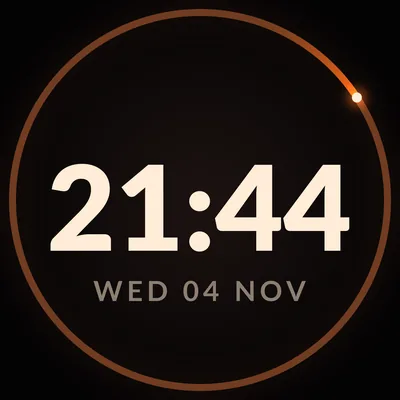
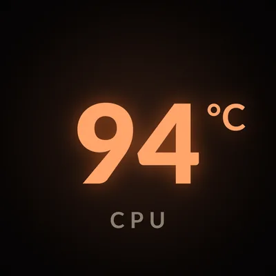
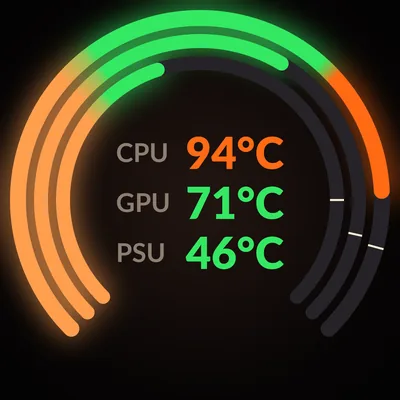
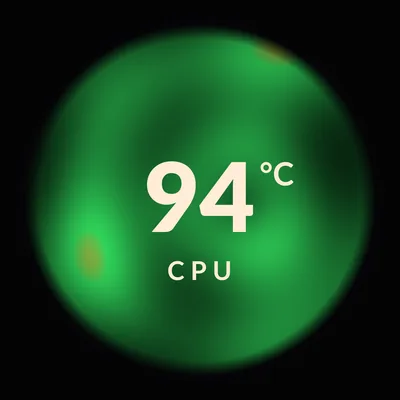
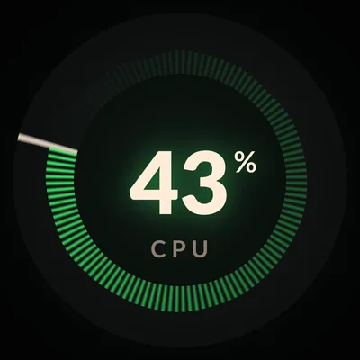
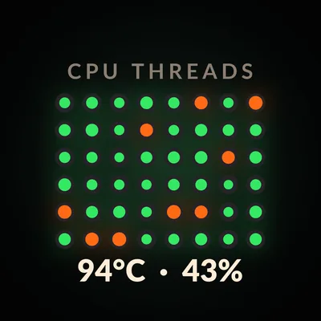
Demo readings throughout. PSU, connector currents and agent quota need configured sources.
THREE THEMES
Match your build.
Set the theme for each panel.
pixdial show crown:ember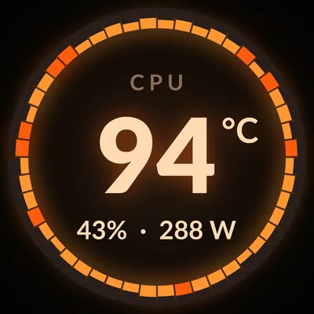
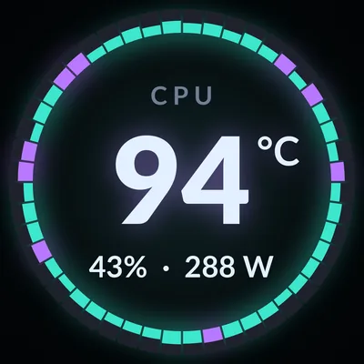
FROM TERMINAL TO PANEL
Your first dashboard.
Install.
Install pixdial from PyPI with uv.
pipx install pixdialworks too.uv tool install pixdialSet up your panels.
Setup finds your panels, gives your user access through sudo (one password prompt), writes the config and runs the checks. The README has the manual steps.
pixdial setupStart at login.
Your panels show their designs now and after every login. To try pixdial in a terminal, use
pixdial run; Ctrl-C turns the panels dark.
Configuration guidepixdial service install
No panel yet?
Render a preview from demo readings. No hardware needed.
pixdial render crown --state busy --out previewTHE PYTHON SDK
Your data.
Your design.
A design turns a snapshot of readings into a picture. pixdial handles sampling, layout changes and delivery to the panel.
DesignsDraw a different view.
SourcesBring your own readings.
DevicesSend frames to another display.
from pixdial.designs import LOAD, THEMES, Design
from pixdial.readings import Reading, Snapshot
class Load(Design):
name = "load"
shows = "CPU load on a gauge"
def update(self, readings, now, dt):
self.value = readings.number("cpu_load")
return self.value, None
def still(self):
frame = self.frame(self.colour(LOAD, self.value))
self.gauge(frame, self.value, LOAD)
self.label(frame, "CPU LOAD")
frame.number(246, self.value, "%")
return frame.finish()
design = Load(THEMES["warm"])
readings = Snapshot({"cpu_load": Reading(42, "%")}, wall=0)
design.update(readings, now=0, dt=0)
design.render(now=0).save("demo.png")At the command line.
pixdial show crown:ember- Change the running panel.
pixdial show rotate- Cycle through designs.
pixdial list- See designs, themes and plugins.
SUPPORTED HARDWARE
One panel. Built for it.
The Lian Li UNI FAN SL V3 Wireless LCD is the only supported physical device today.
| Panel | USB ID | Display | OS |
|---|---|---|---|
| Lian Li UNI FAN SL V3 Wireless LCD | 1cbe:0005 | Round, 400 × 400 | Linux |
The LCD receives frames over USB. Other panels and AIO screens need tested device plugins. pixdial does not control fan speed or RGB lighting.
What pixdial touches.
The driver sends queries, frame-rate setup, JPEG frames and brightness over USB. No firmware writes, reboots or storage commands.
Built-in readers use local files or NVML. No telemetry or network service. Configured commands and plugins run with your permissions and can use the network.
Security and boundariesA FEW DETAILS
Before you plug in.
Can I try pixdial without a panel?
Yes. pixdial render crown --out preview writes a PNG from demo readings. Rendering works on Linux and macOS. For a live preview, use the PNG device. Physical panels are supported on Linux only.
Which readings are built in?
CPU load, RAPL package power, NVIDIA GPU readings and CPU temperature via Linux hardware sensors. Availability depends on your hardware, drivers and permissions. PSU readings, connector currents and agent quota need configured sources.
Run pixdial doctor to check each source. Missing or stale measurements show a dash.
Does pixdial need root?
No. pixdial runs as your user. pixdial setup installs the udev rule that gives you access to the panels through sudo, after it prints the commands. On a machine nobody logs in to, it installs a group rule instead. RAPL counters can need separate read permission.
How does this relate to lian-li-linux?
sgtaziz/lian-li-linux already drives these screens on Linux and offers presets, templates and a layout editor under the MIT licence. pixdial follows its SL V3 protocol implementation and focuses on supplied designs and Python plugins.
Use only one program per panel so they do not compete for the USB interface.
Can I add a design, reading or display?
Yes. Python entry points register designs, sources and devices. The example plugin includes all three. New physical displays need a device plugin and hardware testing; other resolutions also need rendering support.
Make the screen yours.
uv tool install pixdial